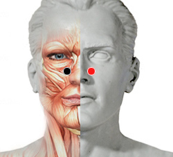
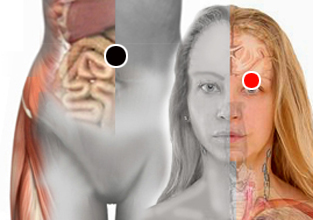

Sinusitis nasal
Par
seno nasal - seno nasal

Generalidades:
Infección y congestión de los senos nasales debido a: Infecciones en vias respiratorias altas, fractura de huesos, sistema inmune deprimido.
Síntomas:
Dolor de cornetes al respirar, amigdalitis, asma, infecciones de garganta. Para equilibrar el eje de pulmón impactar pares: Braquial y Dorsal 2
Congestión nasal:
Pares
colon transverso - párpado (I)
vejiga - timo
